| kindle電子書籍の出販: Wordで原稿作成の実験 | |
| 長谷川 和彦 | |
| (2018) | |
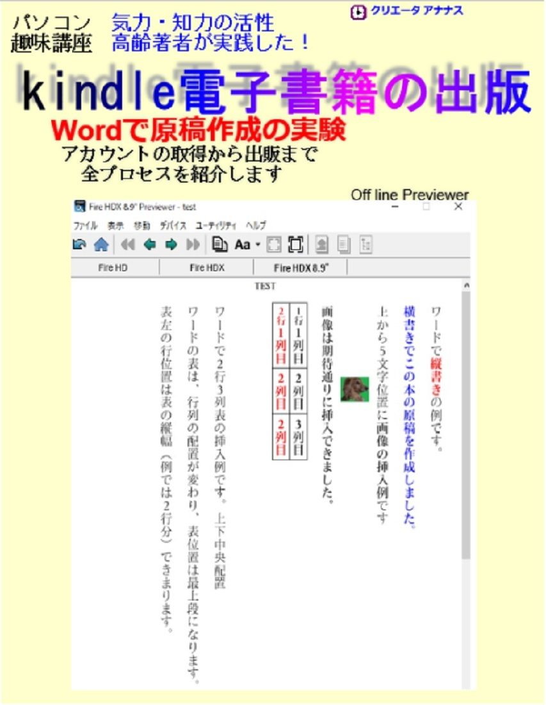
内容
自由時間が豊富にとれる７０才半ばなり、プログラミングに興味を抱き趣 味となり、実習・実験した結果を纏め記録しております。
ＨＴＭＬ，ＸＡＭＰＰ、ＪＡＶＡ ＳＣＲＩＰＴ，ＣＡＭＶＡＳ，ＳＶＧなど結果を纏め電子書籍として整理出版しました。
必要なものは、パソコン、パソコンに具備している文章作成（ＷＯＲＤ２０１３）、テキストエデイタ（メ モ帳）、画像編集アプリ（ペイント）、インターネットプラウザです。
使用パソコンはWindows10 Home Editionですが、いずれのWindowsパソコンでも可能でしょう。
今までは、以上のプログラミング知識と豊富な自由時間を基にＨＴＭＬで原稿や付随する書類を作成して、電子出版しまた。原稿は、横書きでした。縦書きもチャレンジしましたが思うように電子書籍のファイルへ変換できず、ＨＴＭＬは中断しまし た。
新たに、 Ｋｉｎｄｌｅではワードの出力ファイル（．ｄｏｃ／ｄｏｃｘ）を電子書籍ファイルへ変換できる ことが分かり、実習・実験しました。その過程で体験した問題解決や結果を纏め、 ワードで横書き原稿を作り、本書としました。
皆さんに参考になれば、高齢著者も嬉しく思います。
原稿作成や原稿登録などの作業を行う環境を整備しましょう。
私の場合を例にします。
＊インターネットができるパソコン
・パソコン：Windows10 Home Edition
・閲覧プラウザ：Microsoft Edge
・インターネット：定額使い放題
＊使用アプリ
・原稿文書作成：ワード(Word 2013)
・画像加工・描画作成：ペイント
・テキスト作成・編集：メモ帳
費用の掛からない無料の出版・出販先とインターネットでやりとりできる窓口を開設します。
＊Ａｍａｚｏｎアカウントを取得しましょう。
アクセス先：
インターネット検索"amazon.co.jp"→紹介ホームページ経由で直接アドレスへ飛ぶか
直接 http://www.amazon.co.jp/ へアクセスします。
amazon.co.jpのホームページ（図２－１）を閲覧します。右上のアカウント＆リストをクリックします。
ログインの画面が出ます。Eメールまたは携帯電話番号とパスワードを登録します
図２－１ amazon.co.j p のホームページ
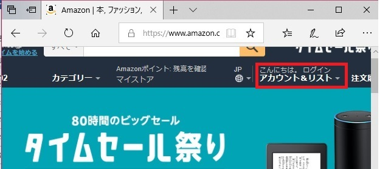
注意：本書で提示する各種のホームページは、２０１８／８～９／時点の内容です。
読者はKindle端末、iPad、iPhone、および Android端末でその本を読むことが出来ます。
これらの端末機能をパソコンで疑似実現したのがオフラインビューアーです。
作成した原稿が各種の疑似Kindle端末（リーダー）では、どのように表示され、 本としての見え方品質を確認します。 品質向上が必要であれば、再度原稿を修正・編集します。
オンラインプレビューアーもありますが、オフラインプレビューアーをダウンロードしましょう。
インターネット検索：kindle previewerを検索し、紹介ホームページ経由で直接アドレス先へ進むか
直接：https://www.amazon.co.jp/gp/feature.html?docId=3077677546へ
アクセスします。
Amazon.co.jp Kindle 出版プログラムのホームページが出ます。
または
直接：
https://kdp.amazon.co.jp/ja_JP/help/topic/G202131170へ
アクセスします。
kindle direct publishing ヘルプトピックのホームページ（図２－２）が出ます。
図２－２ kindle previewer ホームページ
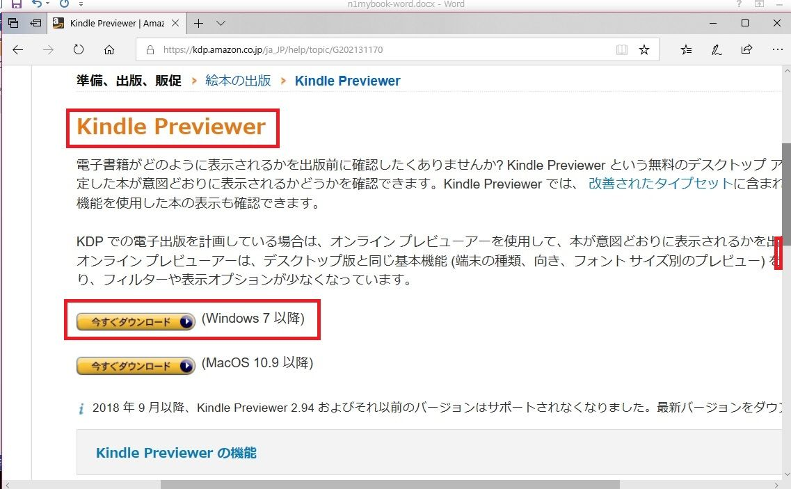
Kindle プレビューアー Windows（7 以降）対応版をダウンロードしてインストールします。デスクトップにショートカットが出現します。
参考：原稿を登録し、オンラインプレビュー後に入手することもできます。
１．原稿作成、表紙作成
２．原稿(.doc/docx)を「下書き」登録
３．オンラインビューアーで見え方確認
（段落・配置・画像サイズなど）
リーダー： タブレット、スマートフォン、ｋｉｎｄｌｅ端末（モノクロ）
修正がある場合 原稿修正 手順１へ
４．変換ＨＴＭＬファイルダウンロード
圧縮ファイルの解凍
５．オフラインビューアーで見え方確認
変換原 稿 (.opf ) を開く
（段落・配置・画像サイズなど見え方確認）
リーダー：Kindle 端末(Fire HD、Fire HDX、Fire HDX8.9")
修正無しの場合 手順１０へ
ワードで修正可能 原稿修正 手順１へ
６．解凍したｈｔｍｌファイルの編集
７．オフラインビューアーで見え方確認
ワードで再修正可能 原稿修正 手順１へ
再修正の場合 手順６へ
８．変換原 稿 (.opf ) の下書き登録
９．オンラインビューアーで見え方確認
修正がある場合 再修正 手順４へ
１０．「出版」登録
Kindl e での審査
１１．出販
使用ワードword2013を基準 に説明しますが、お使いのワードの操作へ読み替えて下さい。
＊画像ファイルと単位系を設定しましょう。
「ホーム」タブの「ファイル」をクリック→「オプション」をクリック→「詳細設定」をクリック、オプションの設定画面が出ます。
・イメージのサイズと画質の項
「ファイル内のイメージを圧縮しない」にチェックを入れます。
・表示の項
「使用する単位」 ポイント（pt）を選択します。
「単位に文字幅を使用する」にチェックします。
＊文字整列には段落のインデントおよび行間隔を設定しましょう。
タブを使用したインデントは Kindle 形式に変換されません。
設定する行にカーソルを移し、マウス右クリックして「段落」を選択します。段落のダイアログ ボックスが表示されます。
私の設定例です。
・「配置」は「左端揃え」を選択します。
・「インデント」の「最初の行」で「なし」を選択します。
・「間隔」にて
「段落前」、「段落後」を「0 行」に、「行間(N)」を「1 行」に設定します。「行間(A)」は「空白」になります。
文章を縦に書くか横に書くかを決めましょう。
「ホーム」タブのページレイアウトをクリック→文字列の方向をクリック→横書き・縦書きの何れかを選択します。途中て切り替えると思いとは違う配置画面になることがあります。
ワードは横書きが基本であるのか、縦書きでは、 配置位置を設定する時、上→左、下→右と読み替える 必要があるようです。
私の実験・解析では、Ｋｉｎｄｌｅ本では、 縦書きは横書きを時計回りに９０度回転した様に変換されます。 表の場合、行と列が入れ替わり、セルの位置も（図３－１）変わります。表を挿入した時には、この点に注意しましょう。
図３―１ 表の挿入例
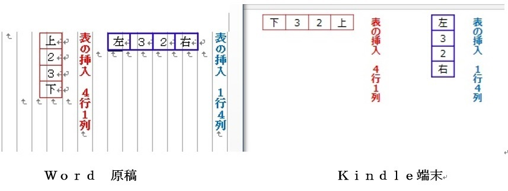
縦書き原稿では、半角文字は横向きになります。全角文字を使いましょう。
ワードには文字装飾機能や書体選択も豊富にあり、原稿も体裁よく表示されます。機種依存性の機能などワードの書籍機能は、電子書籍では必ずしも反映されません（図３－２、３）。
参考：標準文字 font 3 で表示 リーダー縦持ちの場合
FireHDx8.9" 全角３６文字／ライン ２７ライン／画面
FireHDx 全角２８文字／ライン ２０ライン／画面
FireH D " 全角２６文字／ライン １９ライン／画面
＊画面表示が変わります。
ワードで使用した１ページ画面での内容表示が必ずしも同じ画面にはなりません。端末の表示容量（行数、文字数／行）により自動調整されます。画像の位置やサイズも自動調整されます。読者が文字サイズや、拡大機能で画面操作しても変わります。
この事は、表や枠組みをワードで作成すると端末側では乱れてしまう可能性を意味します。
端末のデフォルト設定では、できるだけ品質の良い表示・体裁になる様に原稿のレイアウトの改善・編集をしましょう。
また、端末側に無いフォントは表示されません。画像化して挿入しましょう。
＊ゴシック体はデフォルトでは明朝体になります。
端末ではゴシック／明朝の切り替えが可能です。
＊機種依存文字も表示できません。
まる文字 ①、②、半角カタカナ ｱ、ｲ 下線 、Ｈ ２ Ｏ , a ２ 、 愛知 、表示可能なようです。
＊フォントについて
ワードでのフォントがそのまま反映されません。端末のフォントにて表示されます。フォントサイズは端末側のサイズ３（デフォルト）になります。端末側で文字サイズは選択できます。
＊色について
文字もカラーで表示されます。ただし、端末側でナイトモード（画面が黒色）やセピアモードに読者が切り替える場合があります。認識し易い色を利用しましょう。
＊文字強調について
文章の一部や部分的に太字や文字サイズ変更、色指定、イタリックなど有効になります。
図３－２ リーダー表示例
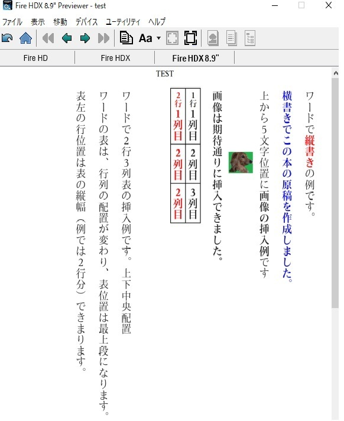
図３－３ ワード原稿例
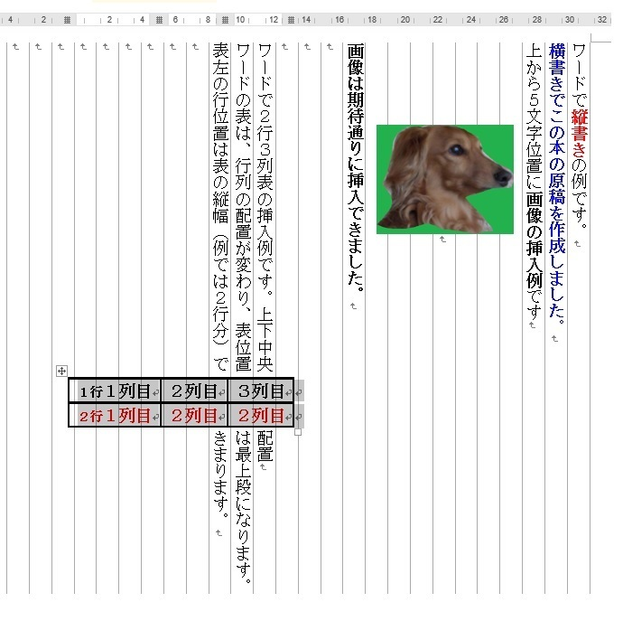
＊画像の挿入
画像を挿入したい行にカーソルを移します。行内での配置位置（左側、中央、右側）を段落で指定します。「マウス右クリック」→「段落」をクリック→「段落ダイアログ」を出します。「インデントと行間隔」の配置で、「左揃え」、「中央揃え」、「右揃え」の希望する揃えを指定、インデントは０、間隔は１にします。画像がその位置に配置されます。
次に、挿入する画像を指定します。「ホーム」の挿入→「画像」→「ファイル検索で目的画像ファイル選択」→「開く」と挿入され、ページいっぱいに画像が表示されます。
サイズ調整は、挿入した画像を選択します。「マウス右クリック」→「レイアウトの詳細設定」をクリック→「レイアウト画面」を出します。サイズ項で、目標のサイズへ「倍率」を小さくします。「文字の折り返し」は行内とします。
参考：画像の位置・サイズ調整は、画像をマウスで掴んで直接移動・調整できます。
配置は、ワード画面では機能しますが、端末では反映されない場合があります。この問題解決には、後述の「生成されるファイル」を参照ください。
＊表の挿入
表は、サイズの大きい囲ものです。それ故、端末側でサイズ調整された時にその囲が ズレル可能性があります。
使用時は、配置やサイズ、表の複雑さに注意しましょう。 ワード画面で表示中の表を画像化して、挿入する方が良いと思います。
表の挿入では、挿入する行にカーソルを移します。次に、「ホーム」の挿入→「表」→目標の表を挿入します。行内での配置は、先ず、表を選択します。次に、マウス右クリック→表のプロパテイ→ダイログが出ます。配置項で、左・中央・右揃いの何れかを選択します。ワード画面では正常な配置や罫線・外枠線消去でも、 端末では配置不良、細線が表示されることがあります。
この問題解決には、後述の「生成されるファイル」を参照ください。
注意：縦書きでの表挿入は、横書きでの表が時計回りに９０度回転する様に変換されます。
名前を半角英数字だけにしましょう。
原稿を登録する時、日本語ファイル名はエラーになる危険性があります。
原稿のファイル拡張子はdocかdocxにします。
画像ファイルはKindle プラットフォームでは、GIF、BMP、JPEG、不透過 PNG、SVG がサポートされています。
原稿や原稿に使う画像ファイル・資料ファイルなど 出版に必要なファイルを納めるフォルダを準備しましょう。 このファルダ内に 画像フォルダも作りましょう。 フォルダ名も半角英数字だけにしましょう。
ワードの最初のページにイメージしている原稿の章、節構成をキーワードで箇条書きにしましょう。
今回の私の例です。
仮目次（自動作成実行後、削除します）
１．前書き
２．事前準備
３．ワードを使用する注意事項
１．事前設定
２．横書き・縦書き
３．電子書籍デバイスへの対応
４．原稿の準備
１．目次作り
２．本文作り
３．本表紙・ＰＲ用本表紙作り
４．登録時の必要項目整理
５．原稿の下書き登録
１．出版先へログイン
２．必要項目登録
３．原稿、ＰＲ用表紙画像登録
４．オンラインビューアーで確認
５．オフラインビューアーで確認
６．原稿の出版登録
１．必要項目登録
２．レビュー登録
７．生成されるファイル
８．ペイントで画材の加工
９．著者紹介
本文を完成させる過程で、章、節の増減、変更があるでしょう。 この目次は飽くまでも、原稿を書く最初のマイルストーンです。 これにより、原稿の内容や使用する資料、画像などの準備がし易くなります。
正式な目次を自動生成した後、削除します。
仮目次の順に本文を書きましょう。章の始めは新しいページにします。
参考：私 は1 ページ ２０行、全角４０文字／行を目安にします。
新しいページに切り替えるには、切り替えたい位置にカーソルを移し、「ホーム」タグの「挿入」をクリック→「ページ」をクリックします。
「表紙」、「空白のページ」、「ページ区切り」の内、「空白のページ」を選択します。
新しいページの１か２行目に、仮目次での章番号とキーワードを項目として記入します。
この記入した 項目を「見出し」として登録しましょう。 目次を 自動生成する条件になります。 記入した項目を選択して、「スタイルの見出し１」を選択します。文字サイズ、強調など調整します。登録が済むと項目の前に「・」が付きます（図４－１）。
縦書きの場合は、英数字も全角文字で書きましょう。半角文字は文字が横向きになります。
画像を挿入位置には、前後１行空けて図 ｘｘｘとか参考に明記しましょう。
正式な画像が無ければ、仮の画像を使いましょう。
図４－１ 「１．前書き」の見出し設定例
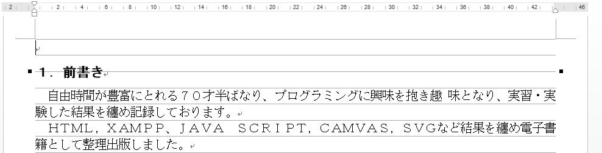
同様に、全体の原稿を作成します。最後の章に著者紹介のページを設けましょう。
一応、 原稿が完成ならば、目次を自動生成しましょう。 前提条件は、章や節の項目を書く時に、見出し定義処理がなされていることです。つまり、章、節の項目の前符号（・記号）が付き、文字が大きくなっています。見出し処理が未実施なら実施して下さい。
＊ 目次を挿入する場所をクリックします。「参考資料」→「目次」をクックします。「自動作成の目次 1」を選択します。
＊ 再度「目次」をクリックし、今度は「ユーザー設定の目次」を選択します。
「ページ番号を表示する」のチェック ボックスをオフにし、「アウトライン レベル」を「1」に設定して、「OK」をクリックします。
＊ 目次を置き換えるかどうかを尋ねられたら、「OK」をクリックします。
＊目次のタイトルである「内容」を選択し、ハイライト化して「挿入」に移動します。
「リンク」で「ブックマーク」をクリックします。「ブックマーク名 」 フィールドにto c と入力して「追加」をクリックします。
参考 ： to c → T able O f C ontents
＊ 目次の後に改ページを挿入します。
注意：仮目次は不要です。削除しましょう。
参考：章、節を変更・追加した場合には、目次更新をします。
「内容」をクリックすると「更新」が出ます。
本のタイトルなど表現した表紙は、文章での表紙でも画像での表紙でも可能です。ただし、登録時にＰＲ用の表紙画像も登録しなければ寂しいWeb紹介になります。出来るだけ 画像化表紙にしましよう。 サイズの 長い方が1000ピクセル以上 でないとアップロードされません。また、 短辺が 500 ピクセル以下 でもアップロードされますが、 Web サイトではＰＲ表示されません。
私は 画像表紙の作成にペイントを利用 しております。 後述の「ペイントで画材の加工」で紹介します。
参考：原稿用のフォルダ内の画像フォルダに表紙画像ファイルも保存しましょう。
本に表紙をつけましょう。
目次の前のページに挿入します。（目次の前にカーソルを移し、「空白ページ」を挿入します。） 表紙画像を挿入します。「挿入」→「画像」でファイル検索ダイアログが出ます。目的とする表紙画像を選択します。
ワード組み込み表紙を活用する場合は、「ホーム」の「挿入」クリック→右側に「表紙」、「空白のページ」、「ページ区切り」が出ます。
「表紙」を選択、組み込みの表紙例が出ます。適当なもの選択します。不要な部分は削除や追加など編集して完成します。 但し、電子書籍登録時のＰＲ表紙画像を別途作成する必要が生じます。この表紙をペイントでＰＲ画像化できます。後述の「ペイントで画材の加工」を参照下さい。
＊言語の選択・・原稿で使用している言語
日本語
＊ 本のタイトル・・表紙に記載されている。
（サブタイトル・・表紙に記載されている。）
日本語、フリガナ、ローマ字で準備します。
＊ 著者
（共同著者）
日本語、フリガナ、ローマ字で準備します。
＊ 内容紹介（4000語以内）
この情報は、Amazon の本の詳細ページにＰＲ表紙と一緒に表示されます。本の内容の概要や目次などは書きましょう。 スペースは全角で行います。
＊ キーワード（最大 7 つ）
本を説明する検索キーワードになります。
以上をメモ帳でテキスト記入してファイルにして置きましょう。保存先は原稿を保存したフォルダにしましょう。登録時には内容紹介はコピー＆ペーストで行うと正確でスピーデイに進みます。
Kindle ダイレクト・パブリッシング kdp.amazon.co.jp へアクセスします。
Kindle direct publishing のホームページが出ます（図５－１）。
Amazon アカウントを使用します。「サインイン」ボタンをクリックします。
Kindle direct publishing 「本棚」、「レポート」、「コミュニティ」、「KDPセレクト」の項目を備えたホームページが出ます（図５－２）。
これがあなたの本棚になります。ここに原稿を登録します。登録済み（販売中）本もここに一覧表示されています。
原稿登録時は、タイトルの「新規作成の電子書籍または有料マンガ」の四角ボタンをクリックします。新しいページが出ます。「Amazon のログイン情報を使用してサインイン」のページです（図５－３）。
アカウントが設定済みで、パスワードの要求があります。
多分、パスワードが保持されています。ダメなら再度、アマゾンで登録したパスワードを入力します。
図５－１ Kindle direct publishing のホームページ
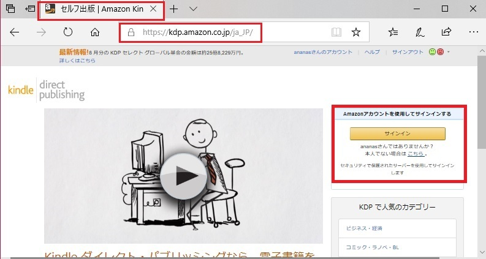
図５－２ 本棚ホームページ
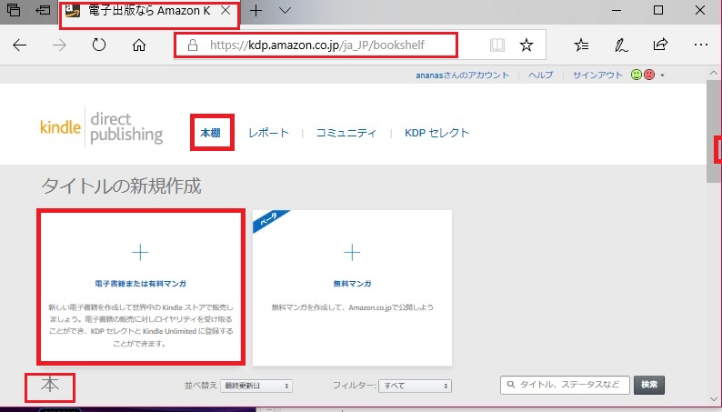
図５－３ 登録ホームページへのサインイン
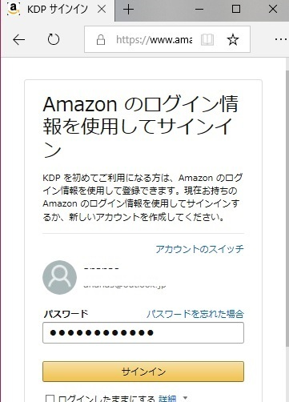
Kindle direct publishing 「本棚」、「レポート」、「コミュニティ」、「KDPセレクト」を備えた新ページで、「Kindle 本の詳細（実行中）」、「Kindle 本のコンテンツ（開始されていません）」、「Kindle 本の価格設定（開始されていません）」の項目があります（図５－４）。
「Kindle 本の詳細」が実行中 で、このページにて登録を開始します。
このページの最後に、「下書きとして保存」、「保存して続行」のボタンがあります。
図５－４ 原稿登録ページ
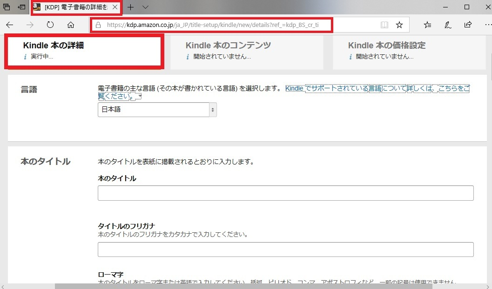
登録しましょう。 「登録必要項目の整理と事前準備事前」 で準備したファイルがあれば、開きましょう。
説明もあります。参照しながら進めましょう・
＊本のタイトルを登録します。
＊著者を登録します。
＊内容紹介を登録します。
＊キーワードを登録します。
＊カテゴリー設定します。１項目は必要です。
＊年齢と学年の範囲 何れか選択が必要です。
「保存して続行」のボタンをクリックします。次の新しいホームページがでます。
「Kindle 本の詳細 （完了） 」、「Kindle 本のコンテンツ（ 完了） 」、「Kindle 本の価格設定 （開始されていません） 」のタイトルがあります。項目が原稿です。登録作業を継続します。
＊デジタル著作権管理・・何れか選択します。
説明を参考にしましょう。
＊ページの方向・・何れか選択します。
原稿の書き方（横・縦書き）に合わせます。
＊電子書籍の原稿をアップロードします（図５－５）。
アップロードをクリックすると「ファイル検索」が出ます。
原稿を保存したフォルダ→原稿ファイル（拡張子doc/docx）を選択、開きます。
アップロードが始まり、しばらくするとメッセージボックスに状況が表示されます。アップロードが不良時には原稿ファイル名や拡張子など点検し、再アップロードします。
図５－５ 原稿をアップロード
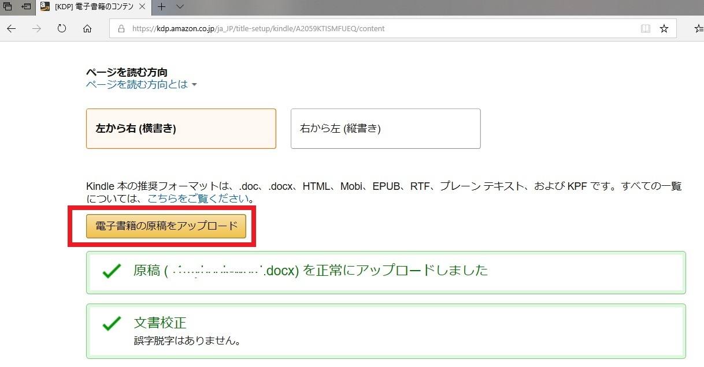
＊kindle本のＰＲ表紙をアップロードします（図５－６）。
「参照」ボタンをクリックするとファイル検索が出ます。原稿を保存したフォルダ内のＰＲ表紙画像ファイルを選択します。アップロードが始まり、しばらくするとメッセージボックスに状況が表示されます。 規約を満足した画像サイズであれば、同時に画像が表示されます。
以上で仮登録が済みました。原稿をkindle本へ変換する準備ができました。
以下、kindle端末での原稿の見え方を確認しましょう。
図５－６ 表紙アップロード・オンラインプレビュアー
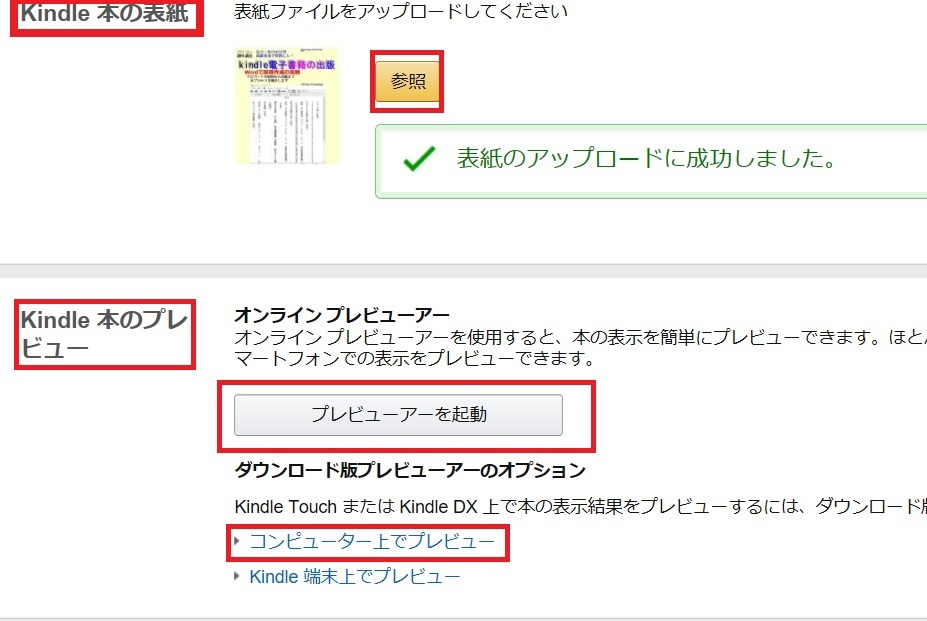
＊オンラインプレビューアー
オンラインプレビューアーについては、「７．ビューアーの様子」を参照下さい。
オンラインプレビューアーを起動します。原稿が電子書籍原稿に変換された本として表示されます。多分 表紙が表示されているでしょう。
タイトルバーに、「本の詳細にもどる」、「フォントサイズ」、「目次」、「ロケーションの表示」の項目があります。 項目「目次」の内容をみると、「初めにもどる」、「表紙」、「目次」、「NCX表示」 の項目がありますね。一応、本としての体裁は完璧です。
「目次」を選択すると目次が表示されます（図５－７）。
図５－７ 「目次」の一部
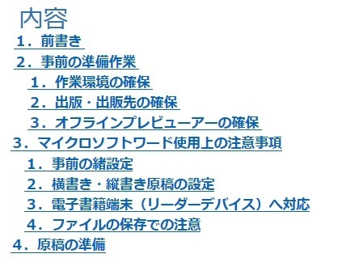
「NCX表示」を選択すると、NCX表示の目次画」表示されます（図５－８）。
図５－８ 「NCX表示」
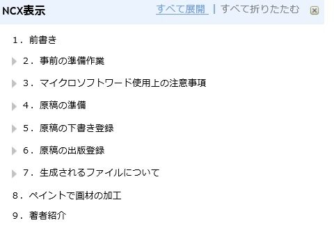
リーダー（タブレット、スマートフォン、Kindle 端末）で原稿表示をプレビューアーで行います。Kindle 端末はモノクロ表示になります。リーダーの縦持ち、横持ちの両状態で、 記事の見え方（文字・行の乱・位置、文字装飾の効果、画像のサイズ・位置）を確認します 。気になる問題箇所は原稿を修正します。多くの問題箇所がある場合は、修正に時間が掛かります。原稿を開き、問題部分の文字色を赤いに替えるなど自分で識別工夫して、オンライン時間を短縮、オフラインで能率よく作業が進むようにしましょう。全体の確認が完了しましたら、ビューアーを行う前工程に戻りましょう。項目「本の詳細にもどる」をクリックします。下書きとして保存をします。原稿の修正をします。
＊原稿修正・オンラインビューアーでの再確認
原稿の始めから最後の方向に気になる問題箇所（識別できますね）を修正して、上書き保存を行います。まだ、ログイン状態（電子書籍の「原稿をアップロード」のボタンが表示されている）なら電子書籍の原稿を再度アップロードし、オンラインビューアーの実施を行います。この過程を繰り返し、見栄え品質を高めます。
も し、サインアウトやログアウトで登録ページから離脱の状態なら、再度Kindle ダイレクト・パブリッシング kdp.amazon.co.jp へアクセスします。サインインします。Kindle direct publishing 本棚のホームページを出します。本のタイトルを確認します。それは、 「下書き」の状態です。その右端に「アクション」の項があり、「設定の続行」状態でしょう。
この項をクリックします。本の登録ページが出ます。 このページの最後にある「保存して続行」をクリックします。 つぎのkindle電子書籍の出販登録ページがでます。この ページの中ごろに「電子書籍の原稿をアップロード」のボタンがあります。 再アップロードして、再度、オンラインビューアーで確認します。 品質が改善するまで以上の過程を繰り返します。
＊オフラインプレビューアーで再確認
前もって、kindle previewerをダウンロード・インストールしましたね。未収得なら、「ダウンロード版プレビューアーのオプション」の手順１で入手しましょう。
オフラインプレビューアーについては、「７．ビューアーの様子」を参照下さい。
このビューアー で、オンラインプレビューアーで確認ができなかった端末で再度、見え方品質の確認を行いましょう。
この オフラインプレビューアーでは、電子書籍ファイルに変換されたファイルが必要になります。
「コンピュータ上でプレビュー」をクリックして、「手順 2: 変換された本のファイルをダウンロードして開きます ( HTML または Mobi )」の HTMLをダウンロードします。
このファイルは圧縮ファイルです。ダウンロード済みのこのファイルを解凍します。ファイル名やフォルダ名は原稿のタイトル名と同じです。この圧縮ファイルと解凍済みフォルダを、原稿を保存したフォルダに移しましょう。
これらのファイルについては、後述の 「生成されるファイル」 の章で内容説明を致します。
この本をプレビューアーで開きましょう。まず、デスクトップにプレビューアーのショートカットがあるでしょう。これを開きます。Kindle Previewerが出ます、メインバーの「ファイル」を開きます。「本を開く」をクリック、ファイル検索が出ます。原稿を保存したフォルダにある解凍済みのタイトル名と同じフォルダの 長い英数のファイル名で 拡張子.opf ファイル を開きます。Kindle Previewerがファイルを変換します。少々時間が掛かります。正常にコンパイルしました。とメッセージが出ます。Okをクリックします。暫くすると本の表紙が表示されます。この端末は、FireHDX9,8"で横置きの状態です。各種の端末と縦置き、横置きで見え方品質の確認をしましょう。適正（完璧ではない）な品質まで原稿を修正します。この過程を繰り返して品質を改善します。適正な品質（ あなたが判断 ）であれば、原稿の出版登録へ進みます。
本棚の最後の欄に、「KDP利用規約 」、「プライバシー規約 」、「利用規約」、「 お問い合わせ」、 「 kdp.amazon.com」の項目があります。「お問い合わせ」をクリックします。新しいホームページが出ます。
左のカテゴリーから該当項目にチエックします。問題集が提示されます。相談内容に近い項目をクリックします。解決策が得られない場合は、項目の「その他」をクリックして直接、 メールで相談 します。担当者から親身な教示が２日以内で届きます。
原稿の下書き登録し、プレビューアーで見え方の品質レベルが適正であると判断されましたね。
図６－１ 原稿登録ページ
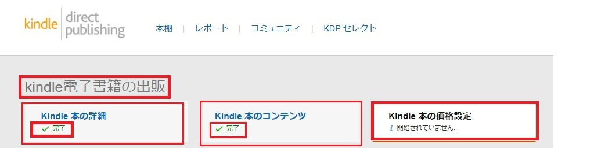
再度Kindle ダイレクト・パブリッシング kdp.amazon.co.jp へアクセスします。
サインインします。オンラインビューアーが使えるホームページを開きましょう。そのページの終わり行に、「下書き保存」、「保存して続行」の（次の手順価格設定）のボタンがあります。「保存して続行」をクリックします。
次のホームページ（図６－１）が出ます。
＊KDP セレクトへの登録
説明を読んで選択判断しましょう。
＊出版地域
説明を読んで選択判断しましょう。
＊ロイヤリティと価格設定
ロイヤリティ プランを選択し、下に Kindle 本の希望小売価格を設定します。
説明を読んで選択判断しましょう。
・ロイヤリティ プラン
ロイヤリティ プラン 35%,70% 選択
・主なマーケットプレイス
国内ならAmazon.co.jpでしょう。円表示になります。
・希望小売価格
価格の範囲が提示される。価格を設定します。
＊MatchBook
説明を読んで選択判断しましょう。
＊本のレンタル
説明を読んで選択判断しましょう。
＊利用規約
説明を読んで判断しましょう。
以上で 登録・設定は終了です。
以上の登録・設定が済むと「下書き保存」、 「 kindl e 本を出版 」 のボタンがあります。
「 kindl e 本を出版」のボタンを押すとレビュー登録が開始されます。
レビュー登録が完了すると審査が開始され、最大７２時間以内に 登録メール宛てに審査結果・販売開始の連絡がきます。
＊支払い受け取り銀行口座の開設
「著者/出版者情報」に入力する名前 (「氏名」) は、著者の正式な名前である必要があります。この名前は銀行口座の名義と同一にします。
KDP にサインインし、ページ上部の「(アカウント名の) アカウント」をクリックします (セキュリティ上の理由で、アカウント確認のためにサインイン ページに移動します)。
・「マイ アカウント」で「支払い情報および銀行口座」を選択します。
・「銀行口座の追加」をクリックし、銀行口座の開設場所を選択して、「追加」をクリックします。
・ 銀行口座の所在地に応じて、以下の手順を実行します。 銀行通帳を準備しましょう。
日本の銀行口座 の場合は、口座名義、口座の種類、口座番号、銀行名、銀行の「金融機関コード」、銀行の「支店コード」を入力します。
「追加」をクリック→ページをスクロール→「保存」をクリックして支払い設定の変更を完了します。
＊出販中書籍の更新・中止
販売中の本の誤字、脱字、文書削減・追加など、ただし、大幅に変更した場合は新しい版と見なされるので、新しい本として出版する必要があります。本を更新した場合は、再度審査が行われます。
kdp.amazon.co.jp にサインイン し、「本棚」に移動します。更新する本の横にある「Kindle 本のアクション」の省略記号 (...) ボタンをクリックします。
「コンテンツを編集」を選択します。「Kindle 本のコンテンツ」ページが表示されます。「原稿」セクションに移動します。以下、最初にこの本を登録した手順と同じです。
出販中の書籍の中止は、Kindle 本のアクション」の省略記号 (...) ボタンをクリックし、「出版停止」を選択します。
プレビューが開始されると登録原稿（本）の最初のページが表示される
図７－１ オンラインビューアー
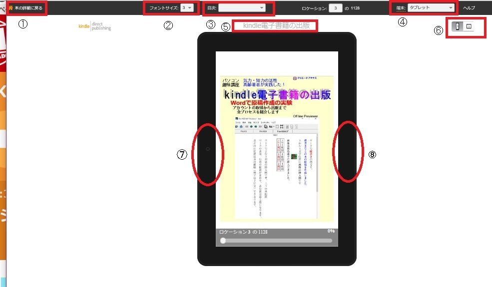
①本の詳細の戻る・・・修正した原稿の再登録へ
②フォントサイズ・・・デフォルトの３の変更
➂ 目次・・・表紙、目次、ＮＣＸ目次の選択
➃ 端末（リーダー）・・・タブレット、スマートフォン 、 kindl e 端末
➄ タイトル表示・・・閲覧中の本のタイトル
➅ 端末の方向・・・縦持ち、横持ちの選択
➆ ページ戻り ➇ ページ進み
図７－２ オフラインビューアーの操作バー
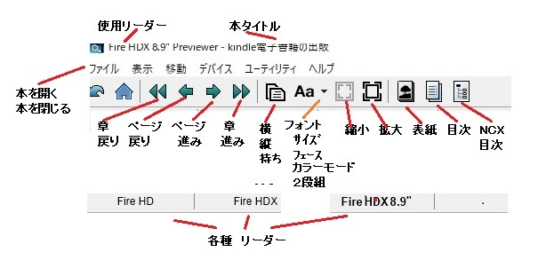
＊開く本は、オンライン ビューアーで閲覧した原稿のＨＴＭＬファイルをダウンローした長い英数のファイル名で拡張子.opfファイルです。
画像がおかしい（図７－３）時、その画像部分をマウスで左クリックすると正常になります（図７－４）。
図７－３ 横に長い画像
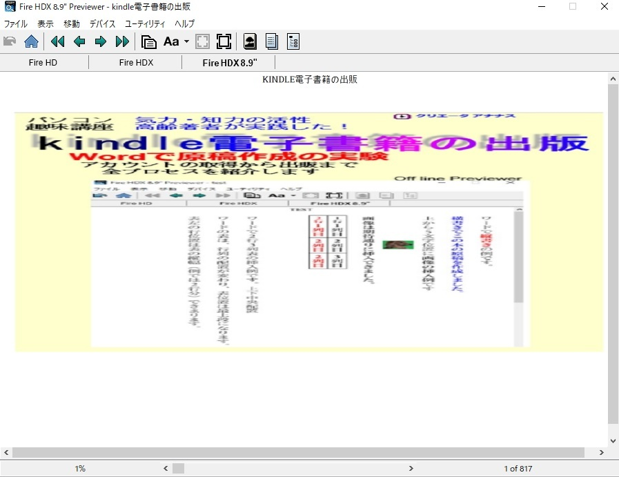
図７－４ 正常な画像
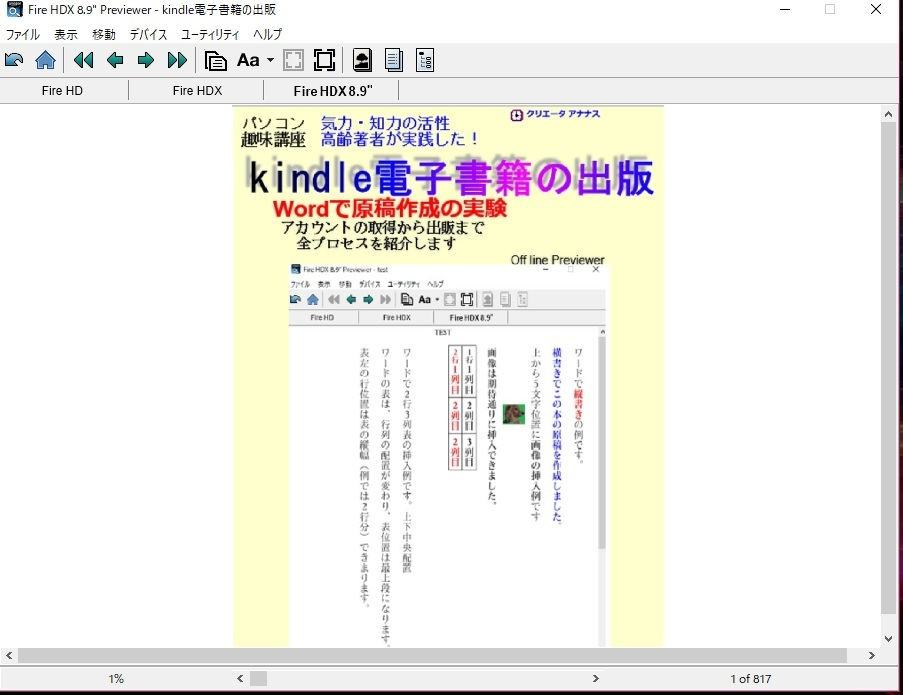
下書き原稿の登録、オンラインプレビューアー確認で、ワード原稿ファイルをＫｉｎｄｌｅ本に変換しました。その変換済みＫｉｎｄｌｅ本ファイルを オフラインプレビューアーで確認するためにＨＴＭＬファイルをダウンロード しました。このファイルは本のタイトル名の圧縮されたファイルです。解凍アプリＬｈａｃａなどで解凍します。タイトル名のフォルダが生成されます。このフォルダ内に長いファイル名の多くのファイルが含まれています 。拡張子がopf、ncx 、html 、jpeg（画像ファイルの拡張子）のファイルです。
これらのファイルを解析すれば、直接、ｈｔｍｌで原稿や関連資料をプログラミングできます。
ここでは、 長いファイル名の共通部分をnameと置き換えます。
＊ファイル name.opf
本としての最終ファイルです。 ＨＴＭＬ言語で記述されていますので、メモ帳で開きます。
表紙画像が含まれていることの宣言、本のタイトルの宣言、使用するファイルの宣言、目次位置（ファイル）の宣言です。
＊ファイル name.ncx
本の目次です。 ＨＴＭＬ言語で記述されていますのでメモ帳で開きます。各項目にリンクが張られています。目次項目は、この場合文字コードで表現されています。このファイルをメモ帳で開き、名前を付けて保存でtest.htmlとして保存し、プラウザでtest.htmlを開くと目次の内容が確認できます。
＊ファイル name.html
本のホームページ版です。 プラウザで開くと本（原稿）の内容が表示されます。ＨＴＭＬ言語で記述されていますので、メモ帳で開きます。内容は、原稿の記述順序にプログラミングされています。表紙、目次、本文となります。ｐタグで１段落分が記述され、その段落の制御はｓｐａｎタグで行うように変換されています。余分な制御情報もあり、最適化はされていない。画像配置など原稿変換不良時は、直接このファイルを編集・修正します。
注意：プラウザのズーム機能が画像には反映されない場合でも、ビューアーでは反映されます。
＊ファイル name.n.jpeg
本に組み込まれた画像ファイルです。 name.jpegがＰＲ表紙用です。それ以外は原稿に採用された順に連番がつきます。本の表紙画像は、name.01.jpegとなるでしょう。
ワード原稿時の元画像サイズが原稿内で調整され、サイズが変わり、jpegファイルがpngに変わる事もあります。
注意：拡張子は使用した画像ファイルにより変わります。
画像挿入で紹介しました方法では、画像配置が指定通りに変換されます。 ワード原稿では正常配置されているがプレビューアーでは不良となる場合があります。
私の実験では、表の罫線を消したが、細い線が残りました。再度、原稿を修正し、再アップロードしても解決しない場合があります。この場合は、このファイルを編集します。
体験し た ４事例（図８－１～４ ） を説明します。
＊まず、 name.htmlをブラウザで開きます。 不良の画像位置を確認します。
画像直前の行の文字列をコピーします。
図８－１では、「左揃え」、図８－２では、「中央揃え」、図８－３では、「画像を２枚」で検索します。
図８－１ 画像のサイズがおかしい例
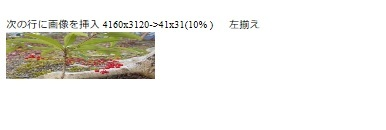
図８－２ 中央配置が左配置の例
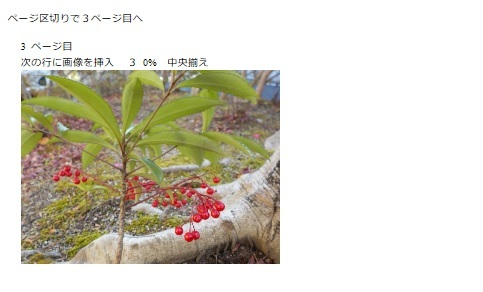
図８－３ 表の枠線が出る例
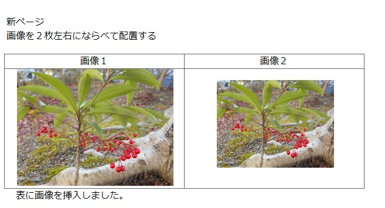
図８－４ 目次のリンクライン例
＊name.htmlをメモ帳で開きます。 ｈｔｍｌ言語のベタ文字列が表示されます。
メモ帳の検索で検索します。メモ帳→「編集」→「検索」→「検索する文字列の欄」に検索キーワードを貼り付ける→「検索方向」→「下へ」→「次を検索」をクリックします。検索されたハイライト部分の近傍にタグ＜ｉｍｇがあります。このタグを包んでいる＜ｐタグがあります。
注意：表の場合は、タグ＜ｔａｂｌｅが存在します。
■図８－１のケース
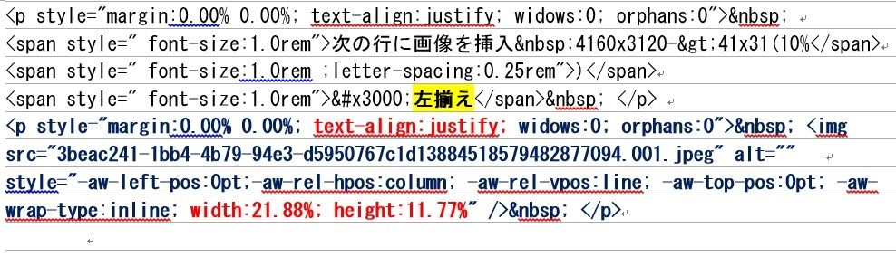
text-align:justify;をtext-align:left;に編集します。 :justifyは両端揃いの指示です。
中央揃いはenter、右揃いはrightと指示します。
画像の縮図状態も不良です。
ファイルの画像サイズは横４１６ｘ縦３１３です。
参考：サイズ情報の取得は、画像ファイル「name.001.jpegをマウス右クリック」→「プロパテイ」→「詳細」で取得します。
サイズを原画の１０％にします。単位も変更します。
width:21.88%;height:11.77% → width:41pt;height:31pt
単位を変更しない場合は、縦横の値は同じにします。
width:21.88%; height:11.77 %
→ width:22%; height:22% 大きい
→ width:12%; height:12% 小さい
以上は説明上の１例です。サイズ・位置調整は、希望する値にしましょう。
注意：サイズ単位が％の場合、プラウザでのズームが無効です。ｐｔでは有効です。
■図８－２のケース
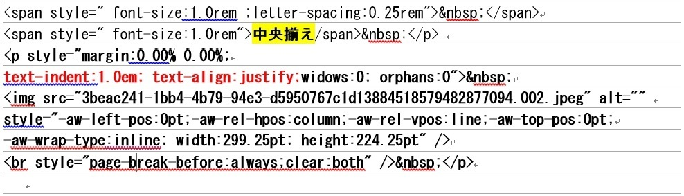
text-indent:1.0em; text-align:justify;を text-indent:0.0em; text-align:center と修正します。 ファイルの画像サイズは横１２４７ｘ縦９３４です。ワードではサイズ30％（３７４Ｘ２８０）を指定しましたが、24％のwidth:299.25pt;height:224.25ptと変換されています。
■図８－３のケース
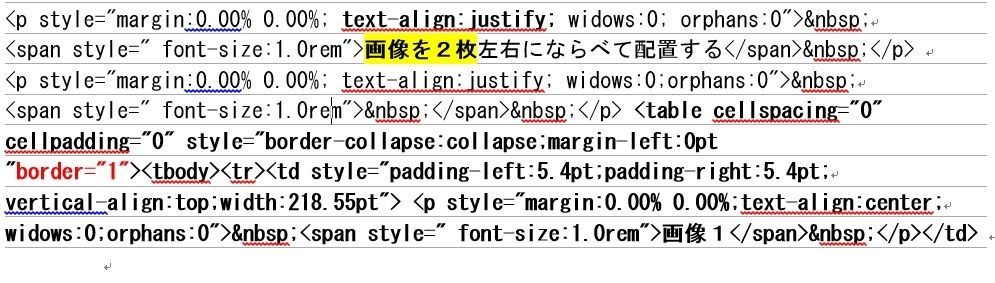
枠線幅を修正します 。border="1" → border="0" と修正します。
位置を指定する場合は、align="left"、align="center"、align="right"の何れかをborder="0"の前に追加します。 align="center" border="0" 枠線なしで行の中央に配置されます。
■図８－４のケース
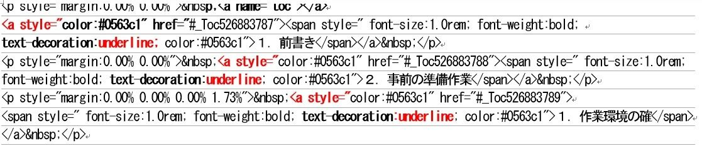
目次の各項目は、 < a style=" color:#0563c1" href="リンク先"><span style=" font-size:1.0rem; font-weight:bold;
text-decoration:underline ; color:#0563c1">項目</span></a> </p>と プログラムされています。
リンクラインを消すには、 <a styleに text-decoration:none を追加します。
a style="をa style= " text-decoration:none;に修正します。
さらに、 <span style のtext-decoration: underline をtext-decoration: none ; に修正します。
この追加と変更を全目次項目に行います。
メモ帳の置換機能を使います。
＊a style="をa style=" text-decoration:none;に修正します（図Ａ１，２）。
検索する文字列：a style=" 置換する文字列：a style=" text-decoration:none;
ページの開始行から、先ず「次を検索」→「置換して次に」で最初の追加を行い、以下 「置換して次に」を目次全項目に行います。
図Ａ１ 「a style」の検索
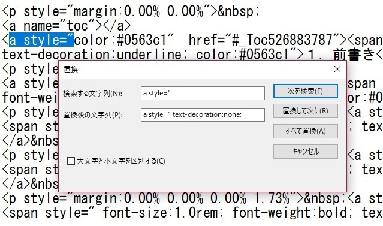
図Ａ２ a styleに「text-decoration:none」 の追加
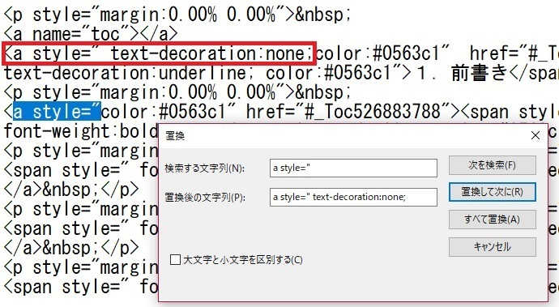
＊underlineをnoneに修正します（図Ｂ１，２）。
検索する文字列：underline 置換する文字列：none
ページの開始行から、先ず「次を検索」→「置換して次に」で最初の追加を行い、 以下 「置換して次に」を目次全項目に行います。
図Ｂ１ 「underline」の検索
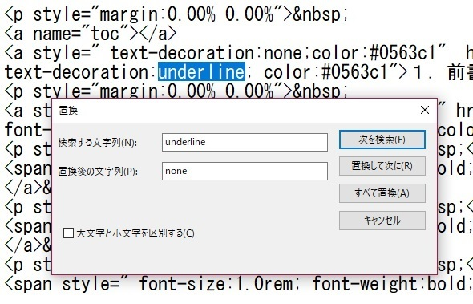
図Ｂ２ 「none」へ変更
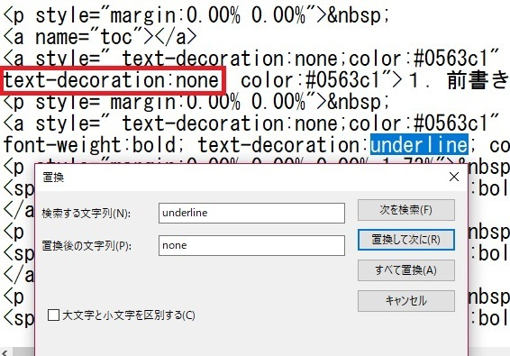
修正が完了しましたら、 名前を付けて保存をします。 ファイル名は現在開いているファイル名の最初に一文字たとえばxを追加します。 xnameとして保存します。 この新しく作成した xname.htmlファイルをブラウザで開きます。問題は解決できましたね。
図８－５ ケース１の修正
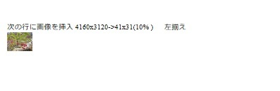
図８－６ ケース２の修正
図８－７ ケース３の修正
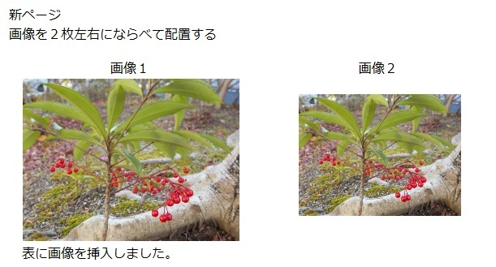
図８－８ ケース４の修正
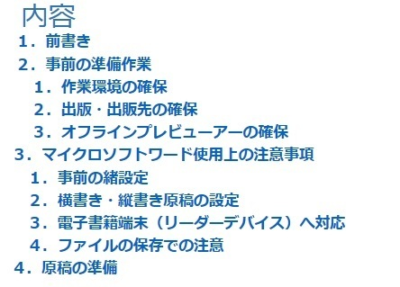
まず、 オフラインビューアーで確認します。
元のname.htmlファイルのファイル名を変更します。 ここでは先 頭に1語zを付けます。
name.html→zname.html とします。 次に、 先ほど編集した新しい ファイルxname.htmlのファイル名を変更します。先頭のxを外します。 これが新しい本のファイルになります。元のファイルはzname.htmlとして保存してあります。
xname.html→name.html とします。
オフラインビューアーを開き、ファイル→本を開く→ファイル検索→ name.opf を開きます。
コンパイルが始まり、結果が出ます。Okを押すと暫くして本が表示されます。
「警告があります」のメッセージが出ることもあります。無視します。
問題が解決されたか内容確認をします。 問題があれば、ＨＴＭＬファイルを再度編集します。
この過程を踏み、あなたが期待できる本へ品質改善を行います。品質改善が終了しましたね。
下書き登録をしましょう。
変換済み 本のファイルがフォルダname.opfのフォルダcnvertednameに name.mobi として保存されています。 正式な本として、この name.mobiをアップロードします。 オンラインビューアーで最終確認します 。問題があれば、今までの工程を繰り返します。
注意：name.mobiファイルは、name.opfをコンパイル度に新しく生成され、フォルダconvertednameに保存されます。下書き登録で、最新のname.mobiファイルを選択する時に注意しましょう。
警告： オンラインビューアーでの最終確認では 、 目次のリンク線消去・変更は反映されず、元に復元されました。 おそらくkindle形式に変換時に、リンク線はデフォルトにリセットされるようです 。色の変更は反映されました。
スクリーン（表示画面）に表示されている内容をコピーして、ペイントに取り込み、加工します。この本の掲載画像はペイントで行いました。手順は下記の通りです。
１．原案をワードやホームページで作成します。
私は表紙をＨＴＭＬでホームページとして作成しました。この原案をスクリーンに表示します（図９－１）。
２．スクリーンの表示をコピーします。
コントロールキー「Ctrl」とコントロールキー「PrtSc」(プリント・スクリーン)の両方を押します。グリップボードにコピーされました。
図９－１．スクリーンの表示
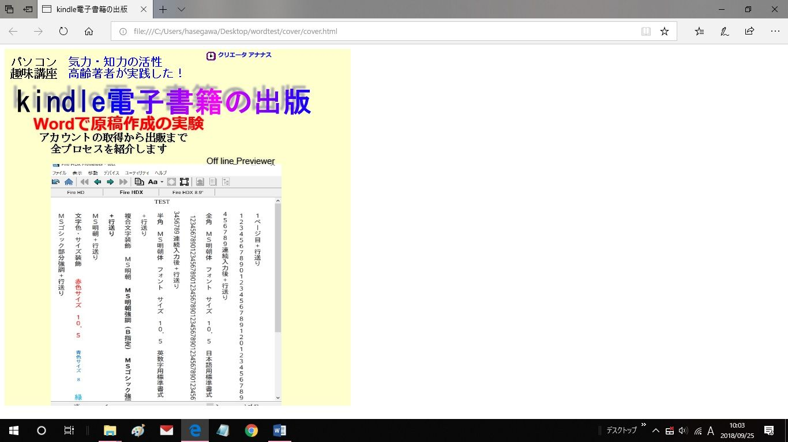
３．ペイントを開きます（図９－２）。
先にペイントを開くとこれもコピーされて、邪魔になる場合があります。
＊表示→縮小を１回クリック
描画エリアが半分になります（図９－３）。
図９－２ ペイント
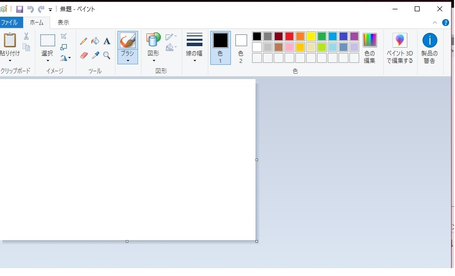
図９－３ 縮小
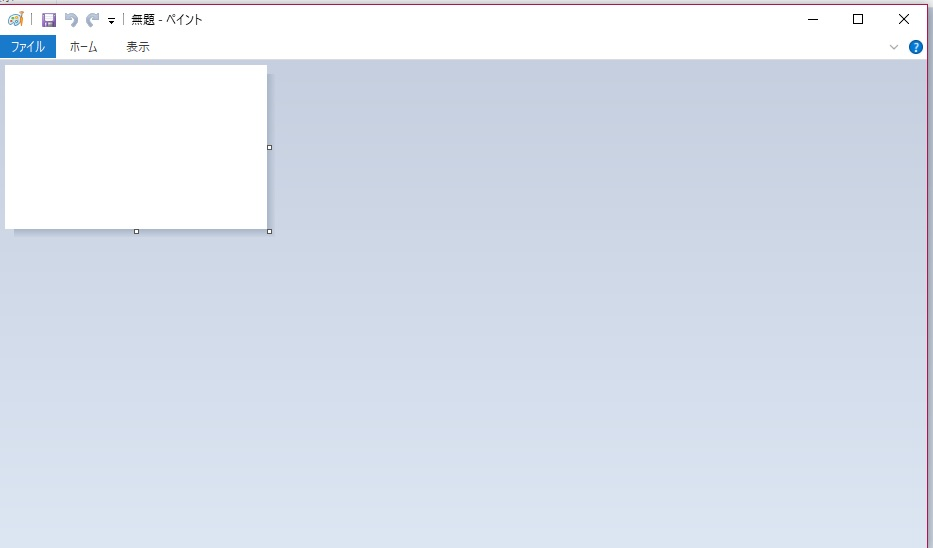
＊ホーム→貼付け→貼付けをクリック
コピーしたスクリーン画像が貼付き表示されます（図９－４）。表示が縮小でも画像データは原のままです。
＊必要な部分を切り取ります
ホーム→選択範囲（四角）→マウスで範囲設定（四角形）→マウス右クリック→コピー→ファイル→新規→保存しない→ペイント画面リセット→ホーム→貼付け→貼付け→指定した範囲の画像が張り付きます（図９－５）。必要なら、画像に加工を施します。
注意：ペイントには加工機能が貧弱ですので、ワードなどで原画を作りましょう。
図９－４ 貼付け・範囲指定
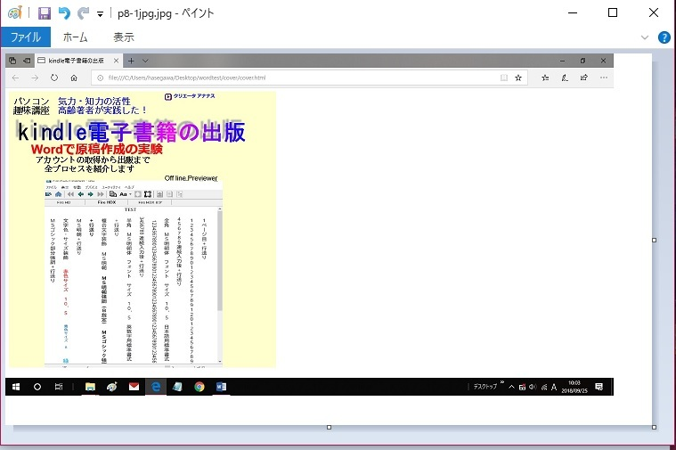
図９－５ 貼付け
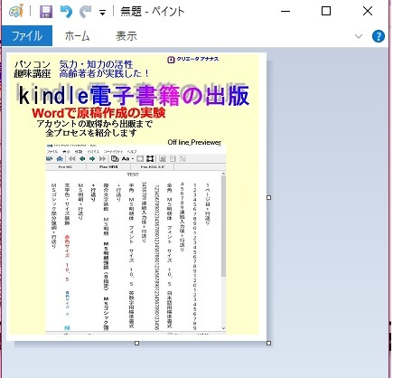
＊サイズ確認と調整をします（図９－６）。
ホーム→サイズ変更と傾斜→サイズ変更と傾斜のダイアログ→サイズ変更→ピクセル、画像のサイズが表示されます。
この場合は５７６ｘ６３８でした。ＰＲ表紙画像は長い幅は１０００ピクセル以上が必要です。調整します。
・縦横比を維持する：縦か横のサイズの値をキー入力
・縦横比を維持しない：縦と横のサイズの値をキー入力
縦横比を維持することにします。：縦を１１００にします。横９９３になります。
Okをクリック、画像のサイズが変わります。
＊保存します（図９－７）。
ホーム→ファイル→名前を」付けて保存→ファイル検索ダイアログ→ファイルの種類、ファイル形式を選びます→ファイル名、ファイルに名前を付けます→保存先を検索・指定します→保存、指定した保存先にファイルが生成されます。
図９－６ サイズ調整
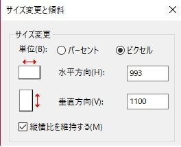
図９－７ 保存
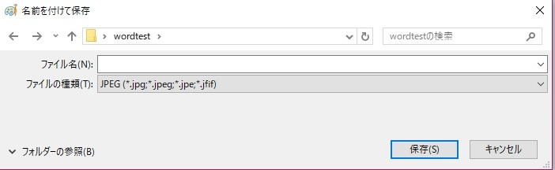
ペイントが不要なら、閉じましょう。
長谷川 和彦
昭和１８年６月 生まれ
愛知県豊田市在中
某自動車会社に約３０年勤務
生産設備のシステム・制御装置の研究開発に従事
技術論文 SAE Technical Paper 1984-02-01
Development to Standardize PC System
for the Automotive Industry
（注）PC:Programmable Controller
現在、プログラミングが趣味です
Nickname アナナス クリエータ(クリエーター)
出版物
１．パソコン趣味講座
ＸＡＭＰＰの実験
電子書籍 Kindle 2018/3/12
２．上記１で使用したファイル
http://fujibaba.com/ 2018/3/-/
３．パソコン趣味講座
Ｊａｖａ Ｓｃｒｉｐｔの実習
CANVASでゲームを作ろう
電子書籍 Kindle 2018/6/10/
４．上記３で使用したファイル
http://fujibaba.com/ 2018/6/-/
５．Ｊａｖａ Ｓｃｒｉｐｔの実習
ｓｖｇでアニメーションを作ろう
電子書籍 Kindle 2018/8/--/
６．上記５で使用したファイル
http://fujibaba.com/ 2018/8/--/
２０１８年１０月１７日 現在